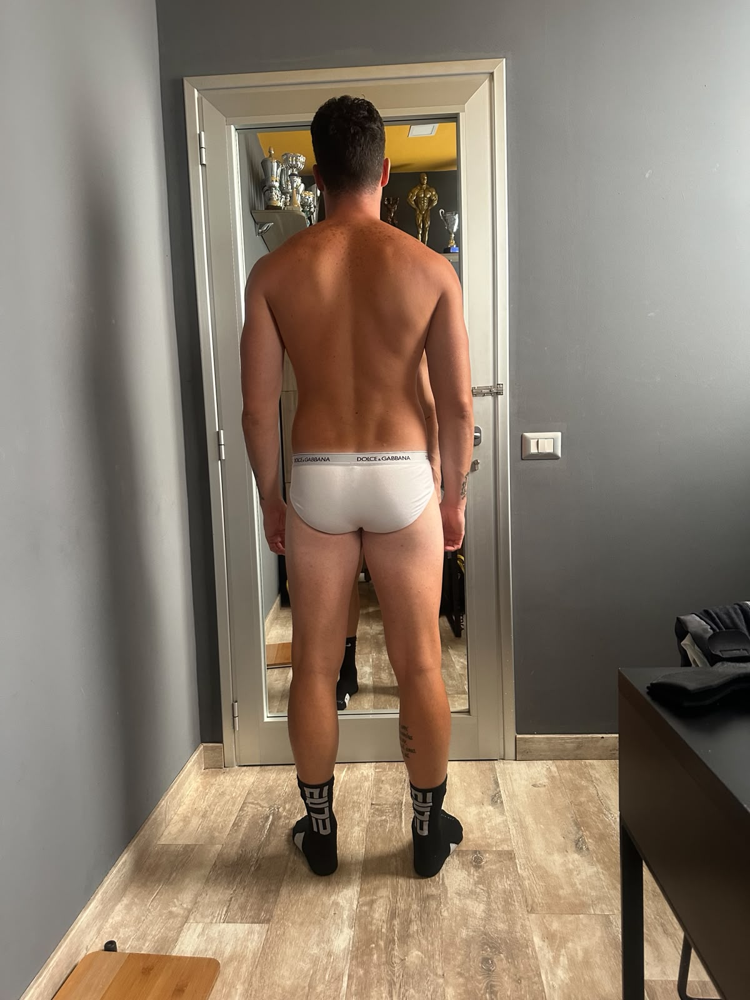
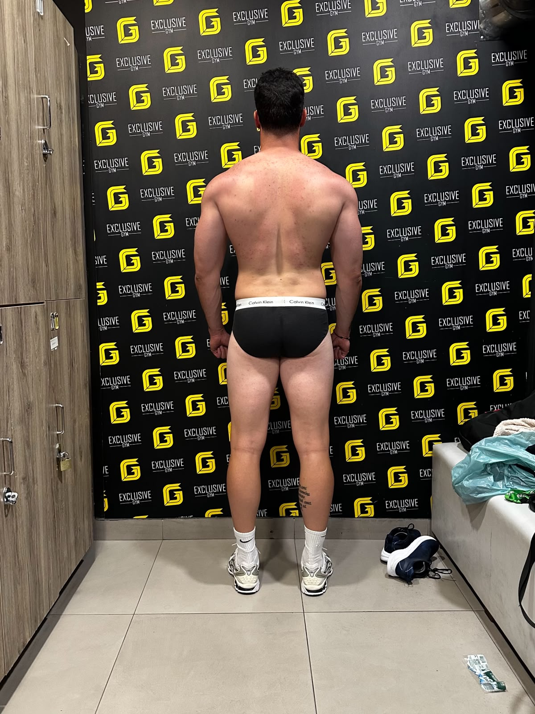
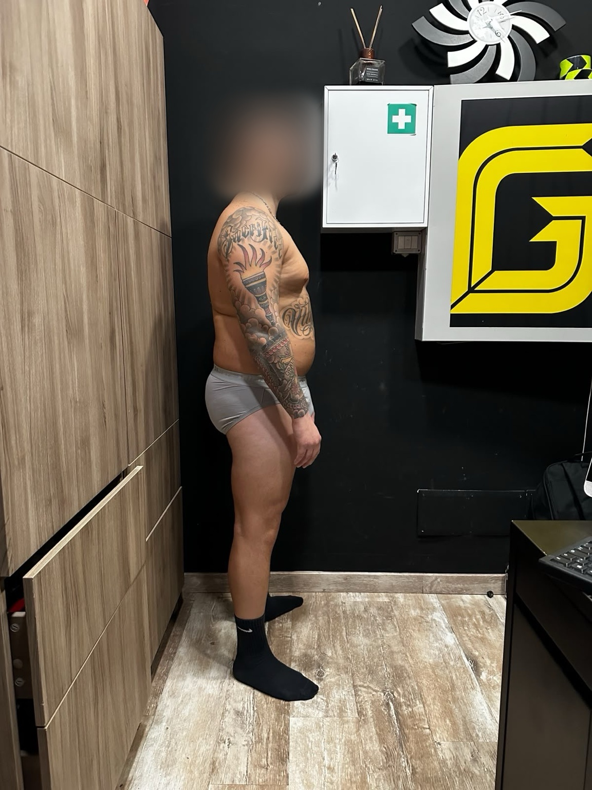
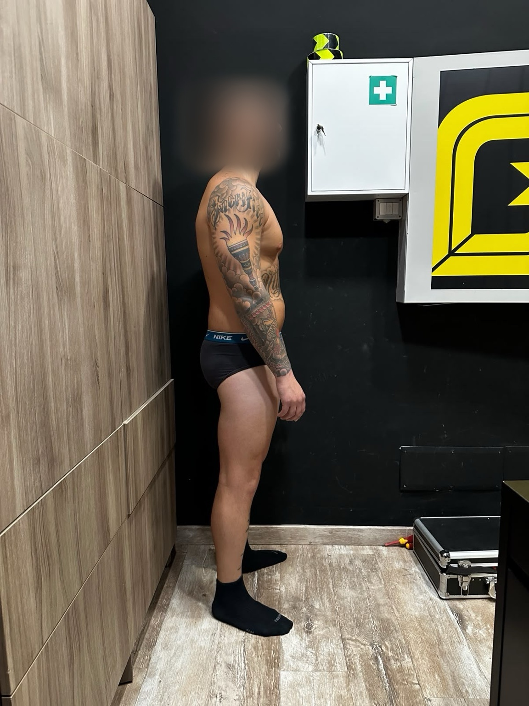
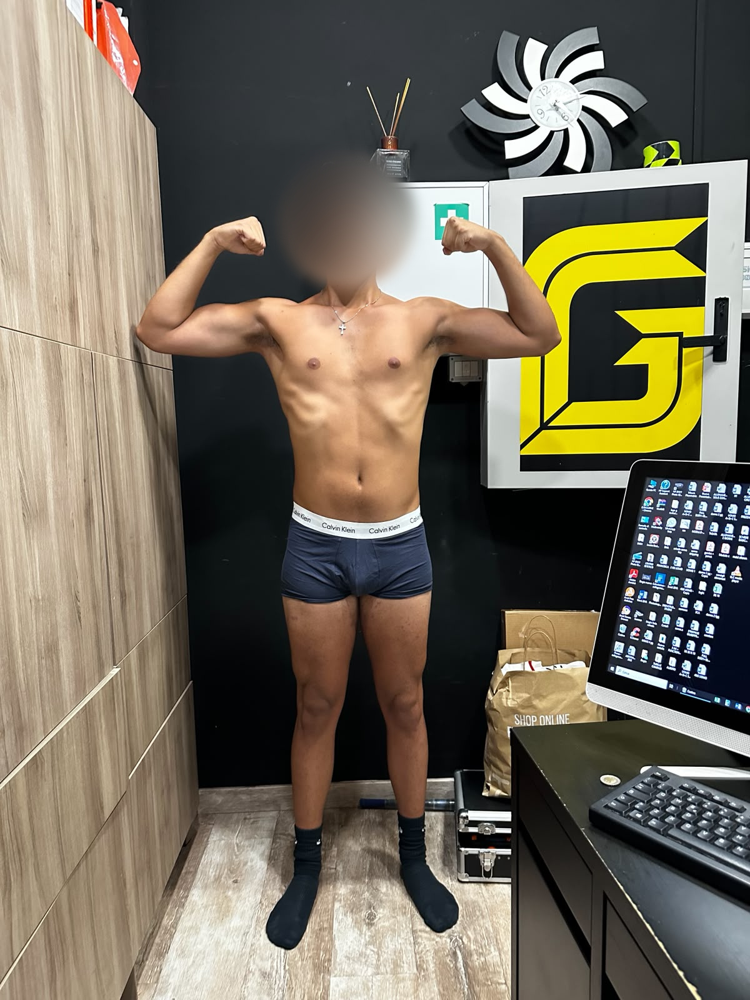
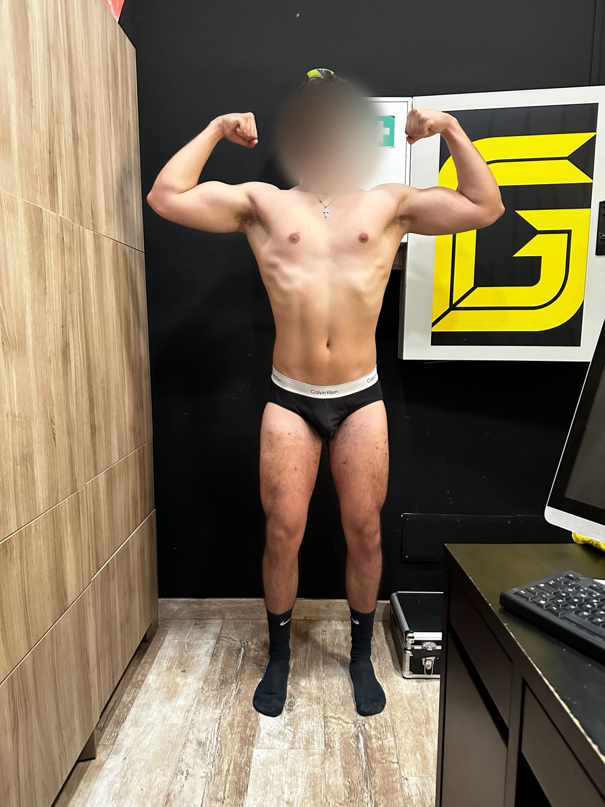
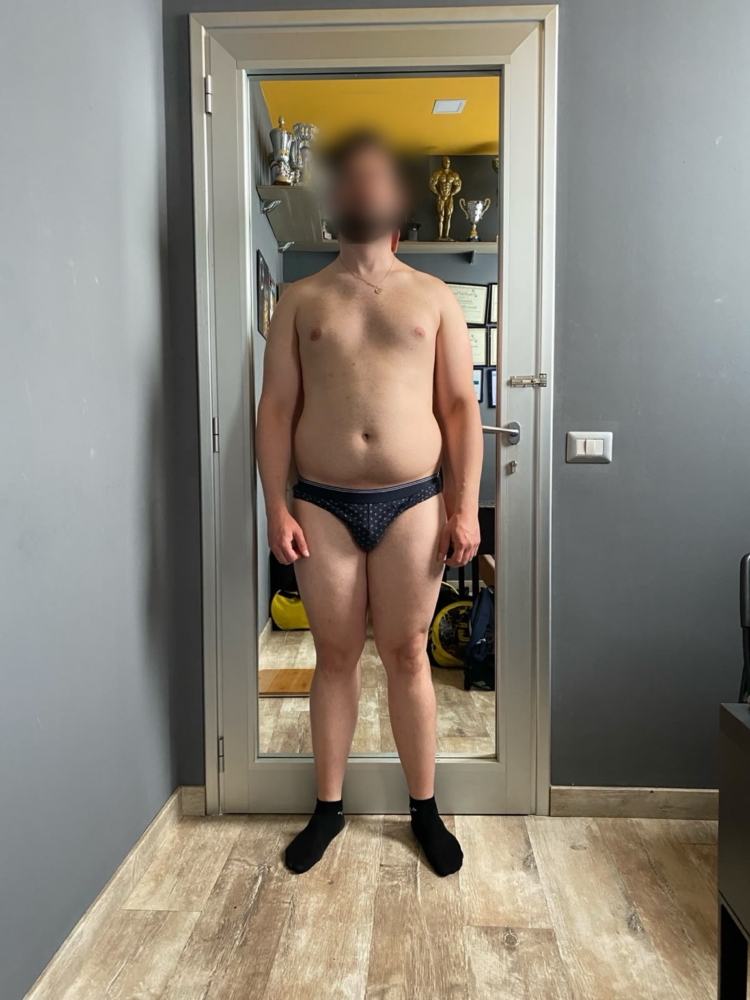
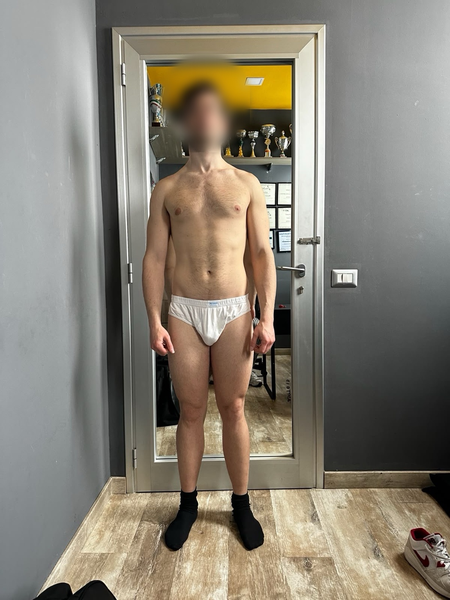

Prima
DopoPasquale G.
- Peso89→93kg
- T-bar row40→90kg
- Stacchi rumeni60→140kg
I risultati
Trasformazioni di clienti reali del percorso ZAC. Non promesse: foto, valori e cambiamenti costruiti settimana dopo settimana con disciplina e struttura.

Prima
Dopo
Prima
DopoDopo un incidente che ha rischiato di costargli la vita, Carlo ha ricostruito corpo, forza e fiducia, riprendendo in mano la sua vita un passo alla volta.

Prima
Dopo
Prima
Dopo